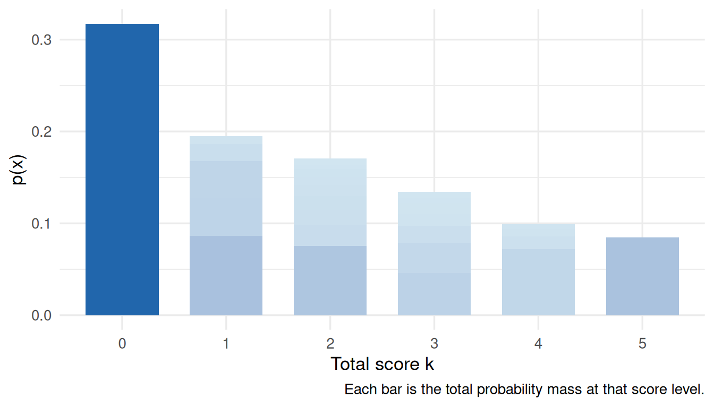
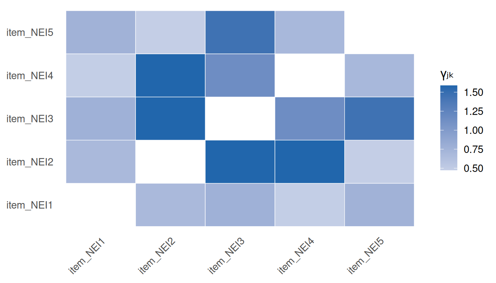
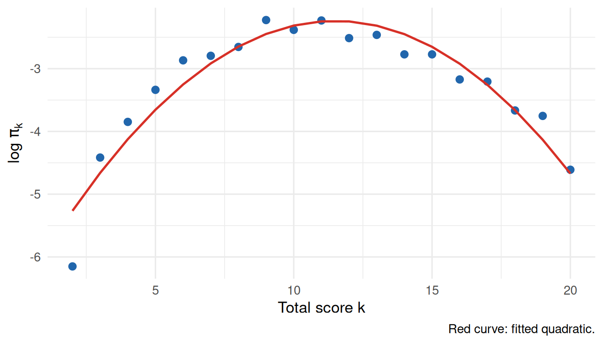
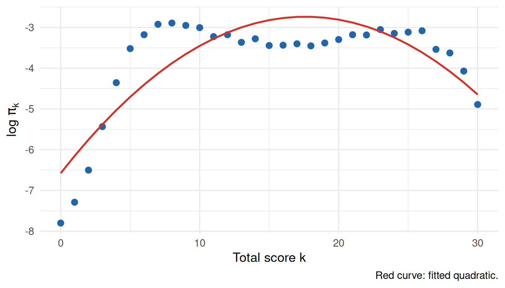
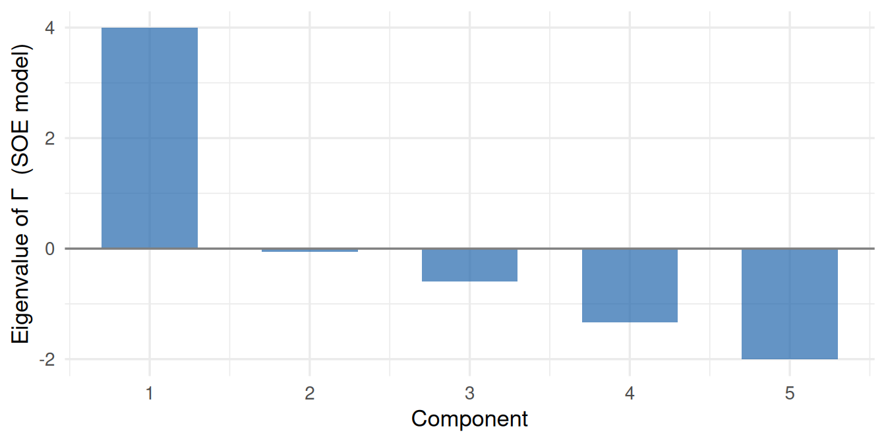

The Dutch Identity: Manifest Probabilities and IRT Models
A tour of Holland’s (1990) Dutch Identity — the result that log-manifest probabilities of dichotomous response patterns are approximately log-quadratic in the item responses. We ground each theoretical claim in IRW data: enumerating manifest probabilities directly, fitting loglinear models, diagnosing the Rasch model via total-score frequencies, assessing dimensionality from second-order interactions, and testing Holland’s conservation law for model complexity.
Published
June 11, 2026
Note
This vignette is currently in development. Content and results may change.
Background
Holland (1990) introduced the Dutch Identity — a result about the mathematical structure that any unidimensional IRT model imposes on the joint distribution of dichotomous item responses. The key insight is that the manifest (unconditional) probability of a response pattern \(\mathbf{x} =
(x_1, \ldots, x_J) \in \{0,1\}^J\) can be written as an exponential family whose sufficient statistics are functions of the item responses. For large tests with smooth item response functions (IRFs), this reduces to a strikingly simple approximation:
This is log-quadratic in the \(x_j\), requires only \(2J + 1\) parameters regardless of \(J\), and makes precise predictions about the structure of second-order interactions between items. The sections below work through the implications one step at a time, using IRW datasets to make each idea concrete.
Note
All figures use pre-computed results from dutch_identity_compute.R. The dataset used in Sections 1–3 is ALSECYPIAMH_WU_2022_NEI (\(J = 5\) items, \(N = 7,842\) respondents, computed May 2026).
Section 1: The manifest probabilities directly
For a test of \(J\) binary items, a respondent’s answers define a response pattern \(\mathbf{x} \in \{0,1\}^J\). There are \(2^J\) possible patterns, each occurring with manifest probability \(p(\mathbf{x})\). Before modeling, it is worth asking: what do these probabilities actually look like? Most patterns are extremely rare; a handful dominate. Holland (1990) motivates the loglinear approach precisely because the \(p(\mathbf{x})\) are too numerous and sparse to model directly for large \(J\).
For \(J \leq 10\) items and \(N \geq 2{,}000\) respondents the full distribution is enumerable. Below we tabulate every \(2^J\) pattern and display the empirical \(p(\mathbf{x})\).
Figure 1: Distribution of empirical manifest probabilities across all 2^J response patterns (log scale). Most patterns are never observed (grey); a few common patterns carry most of the probability mass. Hover over a point to see its response pattern.
Code
patterns |>filter(observed) |>ggplot(aes(x =factor(total), y = p_obs, fill = p_obs)) +geom_col(width =0.7, show.legend =FALSE) +scale_fill_gradient(low ="#d1e5f0", high = irw_blue) +labs(x ="Total score k",y ="p(x)",caption ="Each bar is the total probability mass at that score level." )

Figure 2: Total probability mass at each sum score k = Σ xⱼ. Patterns within each score group contribute additively.
What to notice. Probability mass is extremely concentrated: the most common pattern can account for a large share of the total. The long tail of near-zero patterns means a \(2^J\)-parameter saturated model is hopeless — most cells have zero or one observation. This motivates the loglinear parameterisation in Section 2.
Section 2: Log-manifest probabilities and the independence baseline
Under item independence — no latent variable, no associations — \(\log
p(\mathbf{x})\) is a linear function of the item responses:
This independence loglinear model has \(J + 1\) parameters. It is equivalent to a Poisson regression of pattern counts on the \(J\) binary item predictors. When it fits, all structure in the data is captured by item marginals alone.
Any IRT model implies that \(\log p(\mathbf{x})\)deviates from this baseline — the latent variable induces positive associations among items that the main-effects model misses. Plotting observed versus fitted \(\log p(\mathbf{x})\) makes those deviations visible.
Figure 3: Observed vs. fitted log p(x) under the independence loglinear model. Points on the diagonal are fully explained by item marginals; points below the line are more probable than independence predicts (positive local dependence).
What to notice. Systematic curvature away from the diagonal — especially for extreme total-score patterns — signals that main effects alone are not enough. The points that deviate most are those where all or nearly all items are answered the same way: item correlation inflates these relative to the independence prediction. This is exactly the second-order structure that Holland (1990) formalises.
Section 3: Fitting the second-order exponential model
The full second-order exponential (SOE) model augments the independence model with all \(\binom{J}{2}\) pairwise interaction terms:
This is still a Poisson GLM, now with \(1 + J + \binom{J}{2}\) parameters. The \(J \times J\) matrix \(\boldsymbol{\Gamma}\) (with \(\Gamma_{jk} = \gamma_{jk}\) and \(\Gamma_{jj} = 0\)) encodes all pairwise item associations after removing main effects.
The Dutch Identity (Holland 1990, Theorem 1) predicts that \(\boldsymbol{\Gamma}\) is approximately rank-1: \(\Gamma_{jk} \approx \gamma_j
\gamma_k\). Under this constraint, the interaction structure collapses to:
Table 1: Log-likelihood and BIC for three nested loglinear models. The restricted log-quadratic uses 2J + 1 parameters; the full SOE uses 1 + J + J(J-1)/2.
Model
Parameters
Log-lik
BIC
ΔBIC vs. best
Independence
6
-3816.7
7687.1
90733.6
Log-quadratic (rank-1 Γ)
11
41572.6
-83046.5
0.0
Full SOE
16
-141.6
426.6
83473.1
The key question is whether the restricted log-quadratic — which enforces rank-1 structure on \(\boldsymbol{\Gamma}\) — captures most of the association signal while using only \(1 + 2J\) parameters instead of \(1 + J + \binom{J}{2}\). If the Dutch Identity holds, its ΔBIC relative to the full SOE should be small compared to the gap between the independence model and the SOE.
Figure 4: Observed vs. fitted log-probability for each of the three loglinear models across all observed response patterns. Points on the dashed diagonal indicate perfect fit; scatter above the diagonal means the model over-predicts that pattern.
Structure of the Γ matrix
Code
gmat <- s1_3$gamma_matrixgmat_long <-as.data.frame(as.table(gmat)) |>rename(item1 = Var1, item2 = Var2, gamma = Freq) |>filter(item1 != item2)ggplot(gmat_long, aes(x = item2, y = item1, fill = gamma)) +geom_tile(colour ="white") +scale_fill_gradient2(low = irw_red, mid ="white", high = irw_blue,midpoint =0, name ="γⱼₖ" ) +labs(x =NULL, y =NULL) +theme(axis.text.x =element_text(angle =45, hjust =1),panel.grid =element_blank() )

Figure 5: Heatmap of the J×J interaction matrix Γ from the full SOE model. Under the Dutch Identity, off-diagonal entries should follow a rank-1 pattern γⱼγₖ — all rows should look like rescaled versions of each other.
Under a rank-1 \(\boldsymbol{\Gamma}\), every row is a scalar multiple of every other — the color profile across columns should look identical up to intensity. Systematic blocks or rows that deviate from the common pattern signal local dependence that a single latent factor cannot absorb.
Figure 6: Eigenvalue scree plot of the SOE interaction matrix Γ. The Dutch Identity predicts a single dominant eigenvalue (Γ is approximately rank-1).
What to notice. If the Dutch Identity holds, the restricted log-quadratic model (\(1 + 2J\) parameters) should close most of the gap between the independence model and the full SOE (\(1 + J + \binom{J}{2}\) parameters), despite using far fewer parameters. The eigenvalue plot shows how nearly rank-1 \(\boldsymbol{\Gamma}\) is: one dominant positive eigenvalue with the rest near zero is the hallmark of a unidimensional instrument.
Section 4: The γₖ diagnostic for the Rasch model
Holland (1990) Corollary 2 gives a striking prediction about the Rasch model. If ability \(\theta \sim N(\mu, \sigma^2)\), the probability of obtaining total score \(k\) is:
where \(\bar{y}_+ = \sum_j \bar{p}_j\) is the expected total score at the mean ability. In other words, \(\log \pi_k\) is a quadratic function of \(k\), centred on \(\bar{y}_+\). Systematic deviations indicate either non-normality of the ability distribution or Rasch misfit.
We compare two IRW datasets: one where the Rasch model fits well (difnlr_msatb, \(J = 20\), \(N = 1,407\), \(\Delta\ell = 79.2\) 2PL vs. Rasch), and one where it does not (gilbert_meta_1, \(J = 30\), \(N = 7,322\), \(\Delta\ell = 2834.3\)).
Code
plot_gk(s4$good_rasch$gamma_k_data)

Figure 7: Total-score log-frequencies for the dataset where Rasch fits well. Points follow a smooth quadratic, consistent with Holland’s Corollary 2.
The quadratic \(R^2\) is 0.906 for this dataset.
Code
plot_gk(s4$poor_rasch$gamma_k_data)

Figure 8: Total-score log-frequencies for the dataset where Rasch fits poorly. Deviations from the quadratic suggest non-constant discrimination or a non-normal ability distribution.
The quadratic \(R^2\) is 0.72 for this dataset.
What to notice. When Rasch holds, \(\log \pi_k\) traces a clean inverted parabola. Deviations can take two forms: (1) a sharp peak at the mode with thin tails, suggesting a more leptokurtic ability distribution; or (2) asymmetry or a kink, consistent with varying item discriminations. The \(R^2\) from the quadratic regression is a quick, model-free diagnostic: values above 0.99 are consistent with Rasch; lower values flag something worth investigating.
Section 5: Dimensionality via second-order interaction matrices
Holland ((1990), Section 3.3) shows that for a \(D\)-dimensional IRT model, the matrix \(\boldsymbol{\Gamma}\) of pairwise SOE interactions has rank at most \(D\). This gives a direct route to dimensionality assessment: fit the SOE loglinear model, extract \(\boldsymbol{\Gamma}\), and read off the number of non-negligible eigenvalues. We compare this to the standard approach of examining eigenvalues of the inter-item correlation matrix.
We use ALSECYPIAMH_WU_2022_NEI (\(J = 5\)) as the unidimensional candidate and CPDMMC_Kunnari_2020_PDP (\(J = 18\)) as the more complex one.
Figure 9: Scree plots of inter-item correlation matrix eigenvalues. A sharply dominant first eigenvalue indicates unidimensionality; multiple eigenvalues above 1 indicate multidimensionality.
Code
if (!is.null(s5$unidim$soe_eigval)) {tibble(component =seq_along(s5$unidim$soe_eigval),eigenvalue = s5$unidim$soe_eigval ) |>ggplot(aes(x = component, y = eigenvalue)) +geom_col(fill = irw_blue, alpha =0.7, width =0.6) +geom_hline(yintercept =0, colour = irw_grey) +scale_x_continuous(breaks =seq_len(s5$unidim$J)) +labs(x ="Component", y ="Eigenvalue of Γ (SOE model)")} else {message("SOE eigenvalues not available for this dataset (J too large for pattern enumeration).")}

Figure 10: Eigenvalue scree plot of the SOE interaction matrix Γ for the unidimensional dataset. A single dominant eigenvalue is consistent with D = 1.
What to notice. A clearly unidimensional instrument shows one eigenvalue well above the rest, with a sharp elbow. A multidimensional instrument shows multiple eigenvalues above 1, with a more gradual decline. The SOE \(\boldsymbol{\Gamma}\) scree plot makes a stronger theoretical claim: the number of non-trivial eigenvalues equals the number of latent dimensions, not just the number that exceed an arbitrary threshold.
Section 6: How many parameters does a long test support?
Holland (1990) establishes a conservation law: a \(D\)-dimensional test of \(J\) items supports at most \((D+1)J\) parameters as \(J \to \infty\). For \(D = 1\) this means at most \(2J\) parameters — exactly what the 2PL provides. The 3PL has \(3J\) parameters, exceeding the limit. Holland’s prediction is therefore that the marginal gain from 2PL → 3PL should shrink as \(J\) grows, and may become negative (overfitting) for long tests.
We test this using the InterModel Vigorish [IMV; see also Holland (1990)] — a log-score measure of predictive improvement — across IRW datasets spanning a range of test lengths.
Figure 11: IMV gain from 1PL → 2PL (blue) and 2PL → 3PL (red) as a function of test length J. Holland’s conservation law predicts the 2PL → 3PL gain shrinks toward zero as J grows.
What to notice. The 1PL → 2PL gain (blue) is typically positive and stable across \(J\): freeing discrimination improves fit regardless of test length, consistent with real variation in item discriminations. The 2PL → 3PL gain (red) should, if Holland is right, trend toward zero as \(J\) grows. If it remains positive at large \(J\), that suggests genuine multidimensionality or pervasive guessing. The pattern across the IRW is the empirical verdict.
WarningLimitations
Pattern sparsity. Sections 1–3 require \(J \leq 10\) for pattern enumeration to be feasible. The SOE loglinear approach does not generalise to large \(J\).
Normal ability assumption. The quadratic \(\log \pi_k\) result (Section 4) holds asymptotically under normality; skewed or multimodal ability distributions can mimic the pattern for the wrong reasons.
3PL instability. The 3PL is difficult to estimate for short tests and small samples. IMV values for 2PL → 3PL should be interpreted cautiously for \(J < 10\).
Dataset selection.irw_filter() conditions are heuristic. The “unidimensional” and “complex” candidates in Section 5 were selected on eigenvalue structure alone. Users with substantive knowledge of specific IRW tables should override the automatic selection.
Reproducibility
Results were computed on May 19, 2026. To regenerate:
# 1. Re-run the compute script (from the project root)source("vignettes/dutch_identity_compute.R")# 2. Re-render this pagequarto::quarto_render("vignettes/dutch_identity.qmd")
Holland, Paul W. 1990. “The Dutch Identity: A New Tool for the Study of Item Response Models.”Psychometrika 55 (1): 5–18. https://doi.org/10.1007/BF02294739.